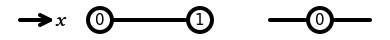
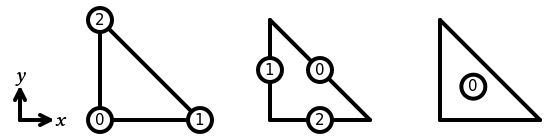
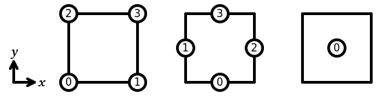
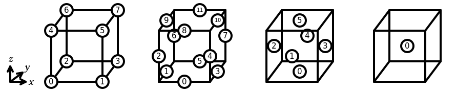

Home Installation Demos C++ docs Python docs
Basix is a finite element definition and tabulation runtime library. Basix allows users to:
- evaluate finite element basis functions and their derivatives at a set of points;
- access geometric and topological information about reference cells;
- apply push forward and pull back operations to map data between a reference cell and a physical cell;
- permute and transform DOFs to allow higher-order elements to be use on arbitrary meshes; and
- interpolate into a finite element space and between finite element spaces.
Basix includes a range of built-in elements, and also allows the user to define their own custom elements.
Basix is one of the components of FEniCSx, alongside UFL, FFCx, and DOLFINx.
The main functionality of Basix is written in C++. Documentation of the C++ functionality of Basix can be found at docs.fenicsproject.org/basix/main/cpp.
The majority of the functionality of Basix is available for use through the Python interface. Documentation of this interface can be found at docs.fenicsproject.org/basix/main/python.
Installing Basix
Instructions for installing Basix can be found at docs.fenicsproject.org/basix/main/install.html.
Source
The source code of Basix is available on GitHub. It is available under an MIT license.
Supported elements
Interval
In Basix, the sub-entities of the reference interval are numbered as follows:

The following elements are supported on an interval:
Triangle
In Basix, the sub-entities of the reference triangle are numbered as follows:

The following elements are supported on a triangle:
- Lagrange
- Nédélec first kind
- Raviart-Thomas
- Nédélec second kind
- Brezzi-Douglas-Marini
- Regge
- Hellan-Herrmann-Johnson
- Crouzeix-Raviart
- Bubble
- Hermite
Quadrilateral
In Basix, the sub-entities of the reference quadrilateral are numbered as follows:

The following elements are supported on a quadrilateral:
- Lagrange
- Nédélec first kind
- Raviart-Thomas
- Nédélec second kind
- Brezzi-Douglas-Marini
- Bubble
- DPC
- Serendipity
Tetrahedron
In Basix, the sub-entities of the reference tetrahedron are numbered as follows:

The following elements are supported on a tetrahedron:
- Lagrange
- Nédélec first kind
- Raviart-Thomas
- Nédélec second kind
- Brezzi-Douglas-Marini
- Regge
- Crouzeix-Raviart
- Bubble
- Hermite
Hexahedron
In Basix, the sub-entities of the reference hexahedron are numbered as follows:

The following elements are supported on a hexahedron:
- Lagrange
- Nédélec first kind
- Raviart-Thomas
- Nédélec second kind
- Brezzi-Douglas-Marini
- Bubble
- DPC
- Serendipity
Prism
In Basix, the sub-entities of the reference prism are numbered as follows:

The following elements are supported on a prism:
Pyramid
In Basix, the sub-entities of the reference pyramid are numbered as follows:

The following elements are supported on a pyramid: